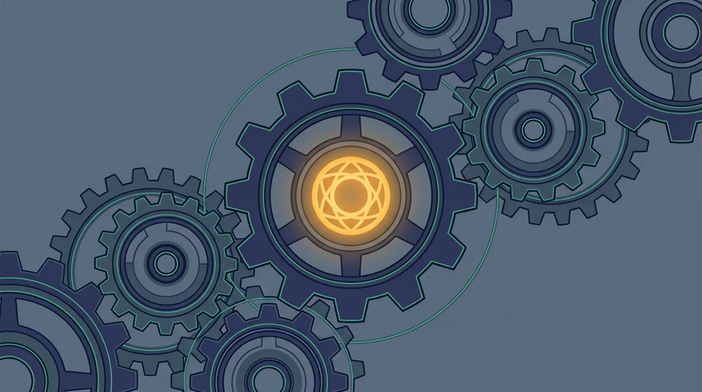

Softwareentwicklung · · 8 Min.
Claude Code, OpenClaw und die neue Agent-Architektur: Was dahinter steckt
Aus dem Archiv: Dieser Beitrag ist vor über einem halben Jahr erschienen. Manche Zahlen und Produktnamen haben sich seither geändert.

Mit KI erstellt (gpt-image-2.5-sunburst, 10/2026)Wenn ich KMU-Geschäftsführern erkläre, was ich einrichte, sage ich: Ein System, das Ihren Betrieb kennt, sich an Ihre Regeln hält und mit der Zeit besser wird. Das stimmt. Aber es ist die halbe Geschichte.
Dieser Beitrag ist die andere Hälfte — für Entwickler, IT-Dienstleister und technisch Interessierte, die wissen wollen, was unter der Haube passiert. Und warum die aktuelle Generation von Agent-Werkzeugen eine grundlegend andere Architektur ermöglicht als noch vor einem Jahr.
Die Landschaft hat sich verschoben
Bis Mitte 2025 war KI-Integration für die meisten Betriebe gleichbedeutend mit API-Calls an OpenAI. Man schickte einen Prompt, bekam eine Antwort, und alles dazwischen — Kontext, Gedächtnis, Regeln, Werkzeugzugriff — musste man selbst bauen.
Das hat sich fundamental geändert. Nicht weil die Modelle besser geworden sind (das auch), sondern weil eine neue Schicht dazugekommen ist: Agent-Frameworks, die zwischen dem Modell und der Aufgabe vermitteln. Zwei davon sind für unsere Arbeit besonders relevant.
Claude Code: Mehr als ein Coding-Tool
Claude Code ist Anthropics Agent-Werkzeug. Es läuft als CLI, als Desktop-App, als VS Code- und JetBrains-Extension, und seit kurzem auch im Browser unter claude.ai/code. Aber der Name täuscht: Es ist kein reines Programmierwerkzeug. Es ist eine Agent-Runtime mit eingebautem Werkzeugkasten.
Was Claude Code von einem simplen Chat-Interface unterscheidet:
Persistentes Gedächtnis über CLAUDE.md. Eine Markdown-Datei im Projektverzeichnis, die bei jedem Sessionstart geladen wird. Darin stehen Regeln, Kontext, Arbeitsanweisungen — alles, was das System wissen muss, ohne dass jemand es jedes Mal neu erklären muss. Dazu kommt ein Auto-Memory-System, das sich Erkenntnisse über Sessions hinweg merkt.
Sub-Agents und Agent Teams. Claude Code kann spezialisierte Unter-Agenten starten, die jeweils eigene Werkzeuge, Modelle und Berechtigungen haben. Seit Februar 2026 gibt es Agent Teams: Mehrere Sessions arbeiten koordiniert, jede auf einem eigenen Git-Branch, ohne sich gegenseitig in die Quere zu kommen.
MCP-Server (Model Context Protocol). Ein offener Standard, der KI-Agenten mit externen Datenquellen verbindet — Google Drive, Jira, Slack, Datenbanken, Browser-Automatisierung. Das Modell kann nicht nur Text generieren, sondern aktiv mit der Infrastruktur eines Unternehmens interagieren.
Hooks. Shell-Skripte, die bei bestimmten Ereignissen automatisch ausgeführt werden — vor und nach Tool-Aufrufen, bei Session-Start, bei Prompt-Abgabe. Damit lassen sich Linting, Validierung, Logging und Compliance-Checks garantieren, statt sie dem Modell als Empfehlung mitzugeben.
Skills. Spezialisierte Fähigkeiten, definiert als Markdown-Dateien, die bei Bedarf geladen werden. Ein universelles Format, das mittlerweile auch von Cursor, Gemini CLI und anderen Tools unterstützt wird.
OpenClaw: Der Always-On-Agent
OpenClaw (früher Clawdbot) verfolgt einen anderen Ansatz. Es ist kein Entwicklerwerkzeug, sondern ein persistenter Daemon — ein Agent, der im Hintergrund läuft und über zwölf Kanäle erreichbar ist: WhatsApp, Telegram, Slack, Discord, Signal, Teams und mehr.
Drei Dinge machen OpenClaw architektonisch interessant:
SOUL.md. Wo Claude Code eine CLAUDE.md hat, die Arbeitsanweisungen definiert, hat OpenClaw eine SOUL.md, die Identität definiert. Der Agent liest sich beim Start selbst ein — nicht als Chatbot, der über jemanden spricht, sondern als System, das als jemand denkt und handelt.
Model-agnostisch. OpenClaw routet Anfragen über konfigurierbare Gateways mit Fallback-Ketten. Claude, GPT, Gemini, Mistral, oder lokale Modelle über Ollama — der Agent ist nicht an einen Anbieter gebunden.
Local-first. Alles Gedächtnis liegt als Markdown auf der lokalen Maschine. Kein Cloud-Vendor-Lock-in, volle Kontrolle über die Daten.
Warum die Kombination stärker ist als jedes Tool allein
Hier wird es für die Praxis relevant. Claude Code ist stark bei Reasoning und Werkzeugnutzung — es denkt tief, plant mehrstufig und arbeitet mit Code und Dateien. OpenClaw ist stark bei Persistenz und Erreichbarkeit — es läuft immer, vergisst nichts und ist überall ansprechbar.
Lokale Open-Source-Modelle für Datenschutz. Nicht alles muss über die Cloud laufen. Für die Verarbeitung sensibler Daten — Verträge, Kundendaten, Finanzen — können Modelle wie NVIDIAs Nemotron 3 Super, Qwen 3 oder Mistral Small lokal über Ollama betrieben werden. Sie laufen auf der Hardware des Kunden, ohne Internetverbindung, ohne API-Kosten. Nemotron 3 Super etwa ist ein 120B-MoE-Modell mit 12B aktiven Parametern und einer Million Token Kontextlänge — es läuft auf einer aktuellen RTX-Grafikkarte und liefert für Geschäftsaufgaben wie Angebote, Berichte und Zusammenfassungen ausreichende Qualität. Für komplexere Anforderungen übernehmen Cloud-Modelle — aber nur für Daten, die das Haus verlassen dürfen.
NemoClaw: NVIDIA macht lokale Agenten enterprise-fähig. Seit März 2026 (GTC) gibt es NemoClaw — NVIDIAs Open-Source-Stack, der OpenClaw-Agenten mit Nemotron-Modellen und der OpenShell-Runtime verbindet. Der entscheidende Baustein: ein Privacy Router, der automatisch entscheidet, welche Anfragen lokal verarbeitet werden und welche an Cloud-Modelle gehen dürfen — basierend auf konfigurierbaren Datenschutzregeln. NemoClaw läuft auf RTX-PCs und DGX Spark, ist Open Source und aktuell in Early Preview. Für unsere Architektur ist das eine wichtige Bestätigung: Der hybride Ansatz — lokale Verarbeitung für Sensibles, Cloud für Rechenintensives — wird jetzt auch von NVIDIA als Standard-Architektur für Agent-Systeme unterstützt.
Für ein KMU-System braucht man genau diese Kombination: die Intelligenz eines leistungsfähigen Cloud-Modells, die Datensouveränität lokaler Verarbeitung und die Beständigkeit eines persistenten Systems, das den Betrieb kennt.
Die Architektur, die wir einsetzen, funktioniert so:
Cloud-Intelligenz für schwere Aufgaben. Wenn ein Angebot formuliert, ein Bericht zusammengefasst oder eine Analyse erstellt werden soll, übernimmt Claude Opus oder Sonnet die Denkarbeit. Das Modell bekommt dabei über CLAUDE.md und den Persistenz-Layer alle Regeln und den gesamten Kontext des Betriebs — aber nur für Aufgaben, bei denen keine sensiblen Daten verarbeitet werden.
Lokale Persistenz für Gedächtnis und Compliance. Das Firmenwissen — Kommunikationsstil, Vorlagen, Feedback-History, Compliance-Regeln — liegt lokal. Sensible Daten werden von lokalen Open-Source-Modellen verarbeitet und verlassen die Infrastruktur des Kunden nicht. Nur unkritische Aufgaben gehen an Cloud-Modelle. Diese Entscheidung trifft nicht das Modell, sondern die Architektur.
Feedback-Loop für kontinuierliche Verbesserung. Jede Interaktion erzeugt potenziell ein Learning. Wenn ein Mitarbeiter sagt „zu förmlich" oder „die Struktur passt nicht", wandert das in den Persistenz-Layer und verändert zukünftige Outputs. Nach zwanzig Angeboten arbeitet das System messbar anders als am ersten Tag.
Bounded Recursion: Selbstverbesserung mit Leitplanken
Das ist der Punkt, der technisch am interessantesten und geschäftlich am relevantesten ist.
Ein naives selbstverbesserndes System ist gefährlich — es könnte seine eigenen Regeln wegoptimieren, wenn das kurzfristig bessere Ergebnisse liefert. Die Lösung liegt in einer Architektur mit zwei klar getrennten Zonen:
Offene Zone — hier lernt das System. Kommunikationsstil, Vorlagen, Prozess-Optimierungen, neue Muster aus dem Feedback. Diese Regeln verändern sich mit jeder Interaktion und werden besser.
Geschützte Zone — hier lernt das System nicht. Compliance-Regeln, Datenschutz-Grenzen, Identitäts-Definitionen, ethische Leitplanken. Diese Regeln sind so konfiguriert, dass sie nur vom Menschen geändert werden können — nicht vom System im Rahmen seiner Selbstverbesserung.
In der Praxis: Das System kann lernen, dass Privatkunden einen informelleren Ton bevorzugen. Es kann nicht lernen, dass Kundendaten doch in die Cloud dürfen. Die Grenze zwischen diesen Zonen ist architektonisch erzwungen, nicht durch Hoffnung.
Die Rekursionstiefe ist bewusst begrenzt (wir arbeiten mit Depth 1.5): Das System kann operative Verbesserungen vorschlagen und umsetzen, aber es kann nicht seine eigene Verbesserungslogik verändern. Das verhindert die unkontrollierte Eskalation, vor der viele — zu Recht — Bedenken haben.
Template-Learning: Neues System in zwei Stunden
Ein weiterer architektonischer Vorteil: Jedes eingerichtete KMU-System erweitert die Template-Bibliothek. Nicht die Kundendaten — die bleiben beim Kunden. Aber die Struktur: Welche Regeln braucht ein Handwerksbetrieb mit 15 Mitarbeitern? Was funktioniert bei Dienstleistern anders als bei produzierenden Betrieben? Welche Feedback-Dimensionen sind branchenübergreifend relevant?
Ein neues System startet nicht bei null. Es startet mit den strukturellen Erkenntnissen aller bisherigen Einrichtungen — und wird dann auf den konkreten Betrieb zugeschnitten. Das reduziert die Setup-Zeit auf ein bis zwei Stunden, statt Tage.
Auditierbarkeit als Feature
Jede Veränderung am System ist dokumentiert und nachvollziehbar. Nicht in einem Log, das niemand liest, sondern als Markdown-Dateien in einer versionierten Struktur:
- Wann hat das System welche Regel gelernt?
- Welches Feedback hat zu welcher Änderung geführt?
- Welche geschützten Regeln wurden wann vom Menschen angepasst?
Für den EU AI Act ist das kein Nice-to-have, sondern eine Anforderung. Und für den Datenschutzbeauftragten eines KMU ist es der Unterschied zwischen „Wir nutzen KI und hoffen, dass alles passt" und „Hier ist die lückenlose Dokumentation."
Für wen das relevant ist
Wenn Sie IT-Dienstleister sind und Ihren Kunden KI-Systeme anbieten wollen — nicht als Proof of Concept, sondern als produktives Werkzeug — dann ist die Frage nicht mehr „Welches Modell?", sondern „Welche Architektur?"
Die Modelle sind austauschbar. Claude Opus heute, vielleicht etwas anderes morgen. Was bleibt, ist die Persistenz-Schicht, die Compliance-Architektur und das akkumulierte Firmenwissen. Das ist der Wert, den ein System über die Zeit aufbaut — und der Grund, warum ein einmal eingerichtetes System nicht einfach durch den nächsten Chatbot ersetzt wird.
Die Werkzeuge dafür sind da. Claude Code liefert das Agent SDK, OpenClaw liefert die Daemon-Architektur, und MCP verbindet beides mit der bestehenden Infrastruktur. Was fehlt, ist jemand, der das für einen konkreten Betrieb zusammenbaut — mit den richtigen Regeln, den richtigen Grenzen und dem Verständnis dafür, was ein Geschäftsführer nachts ruhig schlafen lässt. Wichtig dabei: KI-Modelle arbeiten probabilistisch. Die Konfiguration ist eine leistungsfähige organisatorische Maßnahme — sie ersetzt keine Firewall, kein DLP-System und kein IT-Security-Audit. Sie ergänzt diese Maßnahmen und macht den Umgang mit KI im Betrieb strukturiert und nachvollziehbar.
Weiterführend
Wie wir unseren KMU-Kunden erklären, was diese Architektur für ihren Alltag bedeutet:
Armin Fradler begleitet Bildungsorganisationen und Teams beim Umgang mit KI und unterrichtet selbst in der Erwachsenenbildung.